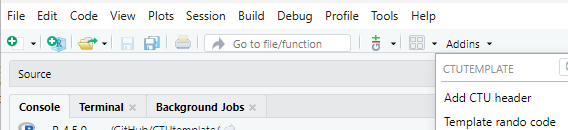

CTUtemplate is a package to create a template directory structure (and files) and also includes the CTUs annual safety report function.
Installation
CTUtemplate is easiest to install via
install.packages('CTUtemplate', repos = c('https://ctu-bern.r-universe.dev', 'https://cloud.r-project.org'))Linux users might have to install from source:
remotes::install_github("CTU-Bern/CTUtemplate")This may require Sys.setenv(R_REMOTES_NO_ERRORS_FROM_WARNINGS="true") if packages were built under a different R version to the one you are using.
Usage
library(CTUtemplate)Template director structure
Once installed, in RStudio, open a “new project in a new directory” and select “CTU project template”. Options in the following window are used to create the folders and headers of R (and STATA) files.
Note: Directory name would typically be e.g. 06_Analysis_xx_yy, and Create project as a subdirectory of would be the 21_Statistics_yy folder of the appropriate project (yy should be the same in both cases).
IMPORTANT: Directory name should not already exist as a subdirectory of 21_Statistics_yy. Please delete (or rename) the existing folder.
Template randomisation list code
When using RStudio it’s possible to open template code for generating and reporting on randomisation lists. Click the Addins menu at the top of the RStudio menu and select “Template rando code” (Addins are sorted by package).

There is also an addin to insert a header at the top of an open script (“Add CTU header”).
Quarto report templates
We now also have some quarto report templates (more still to come, perhaps). At least RStudio v2022.01.1+554 is required for working with them.
Functions in CTUtemplate allow accessing the templates directly from R:
# for a generic report
use_qmd_html("folder")
# for a template recruitment report
use_qmd_htmlrecruitment("folder")
# for a template sample size report
use_qmd_htmlsampsi("folder")
# for a revealjs presentation
use_qmd_pres("folder")
# for typst report, which renders to PDF
use_qmd_typst("folder")The above functions will download the templates and other necessary files and (optionally) open the qmd file for you. You should specify the location to save the files
See also the quarto template repo for more info on our quarto templates.
See the quarto guide for loads of info.
LaTeX Report templates
CTUtemplate has an Rmd template for sample size reports and a more generic template with some examples of how to do things.
| Function | Description |
|---|---|
use_report_template |
Opens a generic file with various examples |
use_ssreport_template |
Opens a template for a sample size report |
use_recreport_template |
Opens a template for a recruitment report |
use_param_report_template |
Opens template files for using parameterized reports |
use_ub_tex_template |
Opens the UNIBE tex template allowing modifications for additional features of latex |
The functions are used to open a new template in the location designated (the recommended location would probably be 08_Reports_projnum).
# for a sample size report
use_ssreport_template("folder/ssreport.Rmd")
# for the examples
use_report_template("folder/report.Rmd")
# for a template recruitment report
use_recreport_template("folder/recreport.Rmd")
# for an example of a parameterized report (note the lack of file extension here)
use_param_report_template("folder/param_report")The top of the header defines the location that the PDF is saved, relative to the Rmd. The xx in 08_Reports_xx should be changed to the project number. ReportName on the following line could be changed to something else.
knit: (function(inputFile, encoding) {
rmarkdown::render(inputFile,
encoding=encoding,
output_file=file.path(dirname(inputFile),
'../08_Reports_xx',
paste0("ReportName_",
Sys.Date(),
".pdf"))) })The templates for sample size calculations and recruitment reports refer to ProjectName. This should also be changed to something more meaningful.
If modifications to the latex template are desired, it can be copied to the folder via
use_ub_tex_template("folder/report.tex")The YAML header in the Rmd file then needs to be changed to include
Using this approach, other latex packages can be used to extend the capabilities of latex.
Acknowledgements
The package logo was created with ggplot2 and hexSticker with icons from Font Awesome (via the emojifont package).